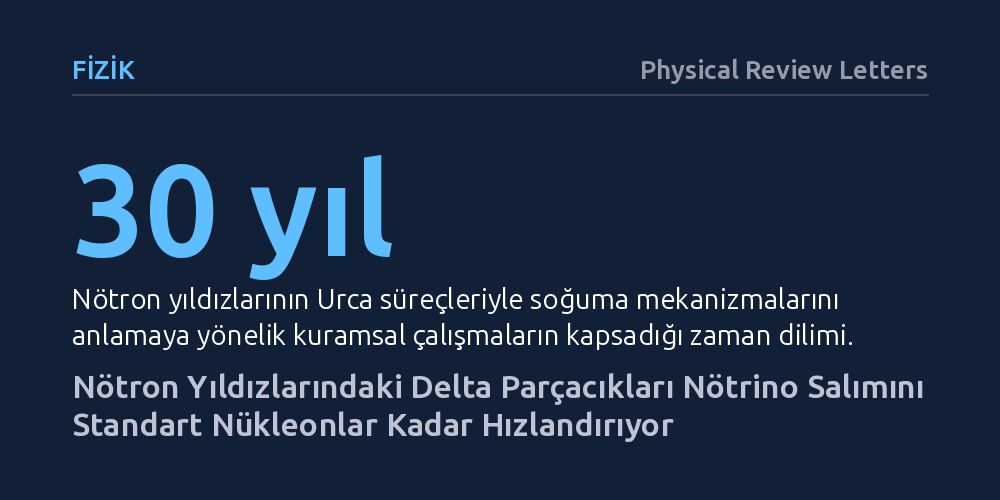

FIZIK · Physical Review Letters · 2026-10-19
Araştırmacılar, devasa nötron yıldızlarının çekirdeğinde bulunabilen delta izobarı parçacıklarının doğrudan Urca süreçleri üzerinden yaydığı nötrino miktarını kuramsal olarak hesapladı. Bu süreçlerin, kinematik şartlar sağlandığında standart nükleonik süreçlerle karşılaştırılabilecek düzeyde güçlü nötrino ışıması üreterek yıldızın soğumasını belirgin biçimde hızlandırdığı bulundu.
Nötron yıldızlarının nasıl soğuduğunu anlamak için sadece proton ve nötronlara bakmanın yetersiz olabileceğini, çekirdekteki egzotik delta parçacıklarının da yıldızın termal evriminde aynı derecede baskın rol oynadığını gösteriyor.

Geceleri gökyüzünde parıldayan dev yıldızlar ömürlerinin sonuna geldiklerinde şiddetli süpernova patlamalarıyla çöker. Bu çöküşün ardından geriye, Güneş kadar büyük bir kütleyi yalnızca bir şehir büyüklüğündeki küreye sığdıran akıl almaz yoğunlukta nötron yıldızları kalır. Doğum anlarında yüz milyarlarca derece sıcaklıkta olan bu kozmik fırınlar, zaman içinde uzayın soğuk boşluğuna enerji yayarak soğumaya başlar. Ancak bu soğuma sıradan bir ışıma yoluyla değil, maddenin en derin katmanlarında üretilip yıldızı terk eden hayalet parçacıklar, yani nötrinolar aracılığıyla gerçekleşir.
Astrofizikçiler yaklaşık otuz yıldır nötron yıldızlarının termal evrimini, yani ne hızla soğuduklarını anlamaya çalışıyor. Standart kabullere göre soğumayı belirleyen en hızlı motor, nötron ve protonların birbirine dönüştüğü 'doğrudan Urca süreci' adı verilen nükleer reaksiyonlardır. Fakat özellikle son yıllarda gözlemlenen ağır ve devasa nötron yıldızları, çekirdeklerinde sıradan nükleonlardan çok daha fazlasını barındırıyor olabilir. Bu aşırı yoğunluklarda ortaya çıkabilecek yeni parçacıkların yıldızın soğumasını nasıl etkileyeceği sorusu, uzun süredir nükleer astrofiziğin en büyük bilinmezlerinden biri olarak duruyordu.
Bir nötron yıldızının merkezine inip doğrudan ölçüm yapmak fiziksel olarak imkansızdır; oradaki basınç ve yoğunluk yeryüzündeki hiçbir laboratuvarda uzun süreli olarak taklit edilemez. Bu nedenle araştırmacılar, kuantum renk dinamiği ve nükleer madde teorisinin temel ilkelerine başvurarak kuramsal bir modelleme yaklaşımı benimsedi. Çalışmada, devasa nötron yıldızlarının merkezindeki aşırı yoğun maddede varlığı öne sürülen 'delta izobarları' adlı uyarılmış baryonların davranışları matematiksel olarak modellendi.
Araştırmacılar, delta izobarlarının proton, nötron ve hiperon gibi diğer parçacıklarla girdiği doğrudan Urca reaksiyon kanallarını tek tek ele aldı. Bu parçacıkların birbirine dönüşürken salacağı nötrino miktarını belirlemek için parçacık fiziğinin kinematik kuralları ile enerji-momentum korunumunu birleştiren analitik türetimler yapıldı. Böylece şimdiye kadar varlığı kuramsal olarak öngörülen ancak enerji kaybı kapasitesi tam olarak hesaplanmamış olan delta kaynaklı nötrino ışıma gücü ilk kez formüllere dökülmüş oldu.
Hesaplamalar, fizikçilerin uzun yıllardır standart kabul ettiği tablonun eksik olabileceğini ortaya koydu. Çekirdek yoğunluğu belirli bir eşiği aşıp reaksiyonlar kinematik olarak izinli hale geldiğinde, delta izobarlarını içeren doğrudan Urca süreçlerinin yaydığı nötrino miktarı şaşırtıcı derecede yüksek çıkıyor. Bu yeni reaksiyonların nötrino ışıma gücü, yıldızın ana soğuma motoru sayılan standart nükleonik doğrudan Urca süreçleriyle yarışabilecek, hatta onlarla neredeyse aynı seviyeye ulaşabilecek bir verimlilik sergiliyor.
Daha önce yapılan çalışmalarda delta izobarlarının çekirdekte bulunabileceği öne sürülmüş, ancak bunların yıldızın soğumasına net katkısı sayısal olarak belirlenememişti. Bu araştırma, delta parçacıklarının çekirdekte pasif birer seyirci olmadığını gösteriyor. Şartlar oluştuğunda bu parçacıklar da devasa miktarda nötrino üreterek yıldızın merkezindeki ısının uzaya kaçışına çok güçlü yeni bir tahliye kanalı açıyor.
Bu kuramsal bulgu, gözlemlediğimiz nötron yıldızlarının sıcaklık ölçümlerini yorumlama biçimimizi doğrudan etkileyebilir. Bir nötron yıldızının beklenenden daha hızlı soğuduğu gözlendiğinde, astrofizikçiler bunu sadece nükleonik Urca süreçlerinin erken başlamasına bağlamak zorunda kalmayacak; çekirdekte delta parçacıklarının varlığı da güçlü bir alternatif model olarak değerlendirilecek. Böylece yıldızın soğuma hızı, onun içinde hangi egzotik parçacıkların saklandığına dair dolaylı bir termometre işlevi görebilir.
Bununla birlikte çalışmanın önemli kuramsal sınırları bulunuyor. Öncelikle delta süreçlerinin devreye girmesi, nötron yıldızının merkezindeki yoğunluğun bu reaksiyonları kinematik olarak tetikleyecek kadar yüksek olmasına sıkı sıkıya bağlı. Ayrıca elde edilen sonuçlar tamamen kuramsal türetimlere dayandığından, teleskoplarla yapılacak hassas X-ışını yüzey sıcaklığı gözlemleriyle ve gelecekteki yerçekimsel dalga verileriyle test edilmeye muhtaç.